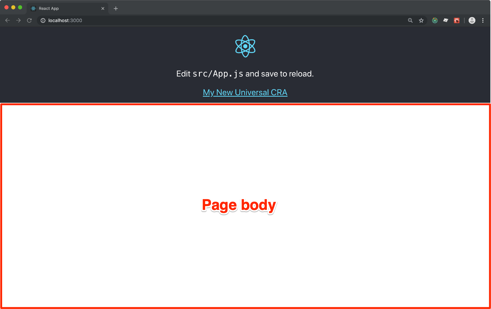
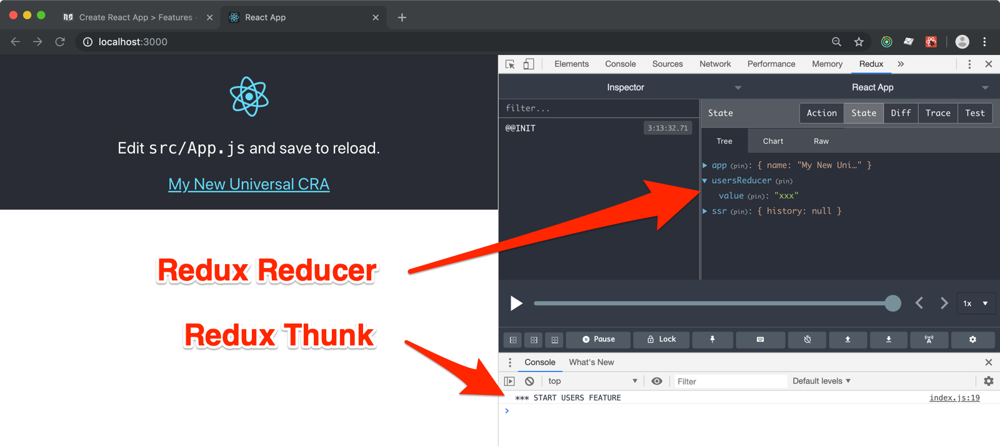
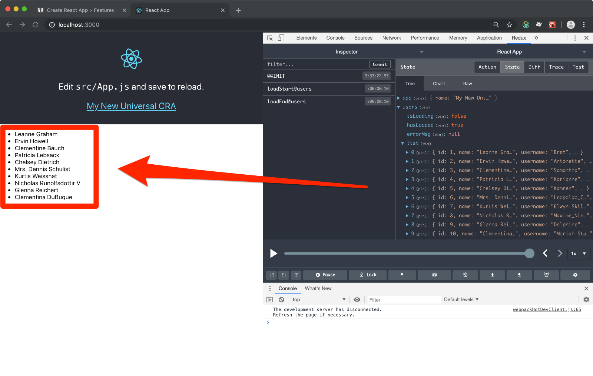

Create React App > Features
In this step-by-step tutorial you are going to add isolated features to the Redux enabled App that we set up in the previous chapter. You can download the codebase here.
🧐 A feature is an independent chunk of your App that implements a specific business requirement. Features can cooperate to create a comples App.
A Redux Feature should normally provide:
- one or more Redux reducers
- one or more Redux services (aka
redux-thunk) - one or more React Containers
Actually all of them are quite optional. I usually build features that are made of reducers and services that are meant to provide features like network detection or universal storage.
In this tutorial you are going to build a feature that is capable of showing a list of users asynchrnously pulled from Tipicode.
We are going to build this feature using the Webpack DevServer that comes bundled
with CRA (yarn start) and then we will enjoy the very same result entirely
server-side rendered... without any change!
Before you start...
CRA comes with a full page React logo UI... Although they make a nice point with it,
I sugges you hack into the src/App.css and reduce the header size so to achieve
something like this:

Here are the small changes to the CSS:
.App-logo {
...
height: 10vmin;
}
.App-header {
...
min-height: 28vh;
}
A Feature's Manifest
A Redux Feature is a ES6 module that exports some particular stuff like reducers or services:
vi src/users-feature/index.js
and type the following dumb code:
const usersReducer = () => ({ value: 'xxx' })
const usersService = {
start: () => () => {
console.log('*** START USERS FEATURE')
},
}
export const reducers = { usersReducer }
export const services = [ usersService ]
Now open the Redux Store creator:
vi src/redux-store.js
and add the follwing lines:
...
export default createSSRState({ app }, [
require('./users-feature'),
])
If you have your app running (yarn start) and the DevTools open, you should
see something like this:

Point n.1: a Redux Feature can provide as many Redux Reducers are needed, but they must be unique in the App due to Redux rules. Besides that, they integrate nicely with the rest of the the previously set up state.
Point n.2: a Redux Service is a simple collection of thunks. If you declare an
init or start thunks, they will be executed when your app boots. First all the init()
from any registered features, followed by the starts(). These thunks can be asyncrhonous.
Point n.3: if you pack a Redux Feature in a directory end expose the manifest as index.js,
then you can simply provide an array or requires to the createSSRState() helper function.
It becomes a breeze to activate/deactivate entire features of your app!
Users List Feature
The idea here is to fetch a list of users from an external API, and to show it just beneath the homepage's header:

The Users Reducer
vi src/users-features/users.reducer.js
and paste:
export const initialState = {
isLoading: false,
hasLoaded: false,
errorMsg: null,
list: [],
}
/**
* Actions
*/
export const LOAD_START = 'loadStart@users'
export const LOAD_END = 'loadEnd@users'
export const LOAD_FAILED = 'loadFailed@users'
export const loadStart = () => ({
type: LOAD_START,
})
export const loadEnd = users => ({
type: LOAD_END,
payload: users,
})
export const loadFailed = errorMsg => ({
type: LOAD_FAILED,
payload: errorMsg,
})
/**
* Handlers
*/
export const actionHandlers = {
[LOAD_START]: (state) => ({
...state,
isLoading: true,
}),
[LOAD_END]: (state, { payload }) => ({
...state,
isLoading: false,
hasLoaded: true,
list: payload,
}),
[LOAD_FAILED]: (state, { payload }) => ({
...state,
isLoading: false,
hasLoaded: true,
errorMsg: payload,
}),
}
export default (state = initialState, action) => {
const handler = actionHandlers[action.type]
return handler ? handler(state, action) : state
}
This is a classic implementation of a reducer, you can find more details about some coding decisions here.
The Users Service
vi src/users-features/users.service.js
and paste:
import { loadStart, loadEnd, loadFailed } from './users.reducer'
export const loadUsers = () => async (dispatch, getState) => {
try {
dispatch(loadStart())
const { ssr } = getState()
const req = fetch('https://jsonplaceholder.typicode.com/users')
const res = await ssr.await(req)
const data = await res.json()
dispatch(loadEnd(data))
} catch (err) {
dispatch(loadFailed(err.message))
}
}
Services are just collections of redux-thunk methods.
Over the years I tried quite a few different approaches to state side effects... Thunks are
still the simplest of the solutions I found.
You can read some more details about the Redux Service idea here.
What about ssr.await()?
Good catch!
This is a pseudo-reducer that is provided by ForrestJS and gives you some simple superpowers to work Server-Side Apps.
ssr.await() is a Promise proxy that you should use for any data-fetching (or other stuff
thay you know) that need to be awaited for during the first meaningful rendering in the Server.
But don't you worry! ForrestJS ships a network feature that makes this even easier, providing you app with a dispatchable interface to basic REST operations and GraphQL queries.
If you know how to
dispatch()actions, you know how to do SSR compatible data fetching with ForrestJS 👍
The UsersList Container
Now that we have a reducer that holds our data, and a service that knows how to retrieve that data, we need to glue things together with a Connected Component, commonly called Container:
vi src/users-features/UsersList.js
and paste:
import React from 'react'
import { connect } from 'react-redux'
import { loadUsers } from './users.service'
const mapState = ({ users }) => users
const mapDispatch = { loadUsers }
const styles = {
error: { color: '#f00' },
list: { textAlign: 'left' },
}
class UsersList extends React.Component {
constructor (props) {
super(props)
const { hasLoaded, loadUsers } = this.props
if (!hasLoaded) loadUsers()
}
render () {
if (this.props.isLoading) {
return <div>loading...</div>
}
if (this.props.errorMsg) {
return (
<div style={styles.error}>
{this.props.errorMsg}
</div>
)
}
return (
<ul style={styles.list}>
{this.props.list.map(user => (
<li key={`user-${user.id}`}>{user.name}</li>
))}
</ul>
)
}
}
export default connect(mapState, mapDispatch)(UsersList)
There is not much to say about the code above... Just that I long to be able to use React Hooks even for Server-Side Apps. So far it is not supported 🧐
The Users Manifest
The feature's components are done. We can jump into the feature's Manifest and package it to be integrated with the rest of the app:
vi src/users-features/index.js
and paste:
import users from './users.reducer'
import * as usersService from './users.service'
// exports the features capabilities:
export const reducers = { users }
export const services = [ usersService ]
// exports the UI entry point:
export { default as UsersList } from './UsersList'
Note: In a real app you may want to use
react-loadable
to achieve Server-Side compatible code splitting. We'll get to that in a future
tutorial.
Integrate the Users Feature in the App
Our Users Feature now is nicely packaged and it integrates already with our Redux Store (if it doesn't, try to repeat the "A Feature's Manifest" paragraph).
It also exports a React component (well, a container) that we can use in the main App's entry point to kick the data fetching and render the list:
vi src/App.js
and edit like:
import { UsersList } from './users-feature';
function App({ name }) {
return (
<div className="App">
...
<UsersList />
</div>
);
}
to achieve our final result:
Server-Side Rendering
There are just two small thing that you have to fix in order to have SSR working:
- you must provide a
fetchpolyfill as it is still not available in NodeJS - you need to start the Client's Redux store with the server's generated state
Polyfill Fetch
vi server.js
then add:
require('es6-promise').polyfill()
require('isomorphic-fetch')
At this point you should be good to go with the NPM script:
yarn serve
SSR State
vi src/index.js
find:
createState()
and replace it with:
createState(window.SERVER_DATA)
Simple, is it not?
Takeaways
- Use Redux Features to organize your codebase into business logic components
- Use
ssr.await()to wrap any Server-Side dependentfetchrequest - Pass the server's Redux state to your client's entry point
I often collect all my features into a src/features folder, it's just a personal
preference, but it makes good sense when you have many.
If you work on a feature that is generic (like networking stuff) you should consider to publish it as an NPM package for us to enjoy it.
ForrestJS maintain a few of those client side features (we are going to use them in some future tutorials):
- network helps you dealing
with universal
fetchandGraphQLqueries - storage helps you storing
data into
localStorageandcookiesin a way that is SSR compatible
Download
If you experienced any trouble following the steps above, download this tutorial codebase here.
Challenge
Can you write a UserDetails container as the entry point to fetch and render a
specific user by id?
It should be used like that:
import { UserDetails } from './users-feature'
...
<UserDetails userId={22} />
The Next Step
In the next tutorial we are going to solve the UserDetails challenge and will also introduce:
- Server-Side compatible routing
- Server-Side compatible code splitting
!!! Whooooaaaahhh!!!